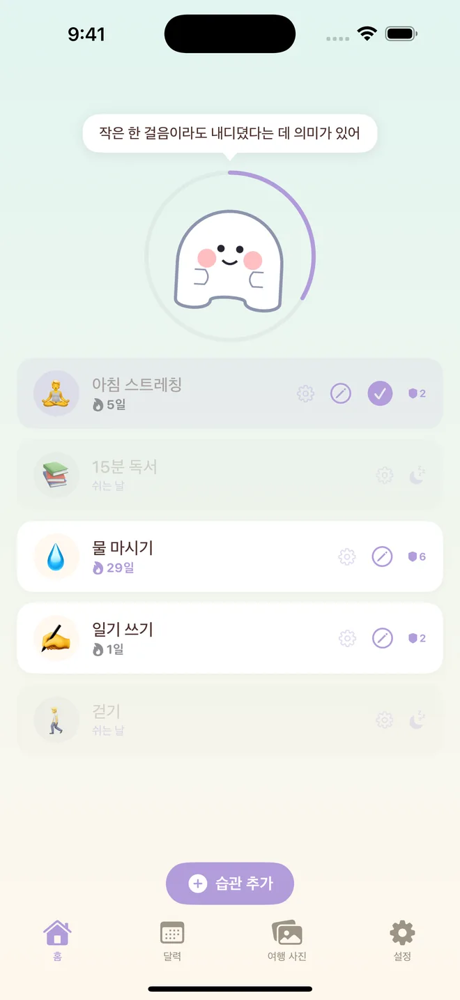
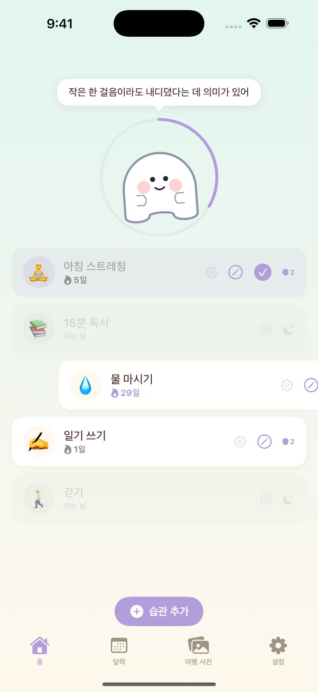
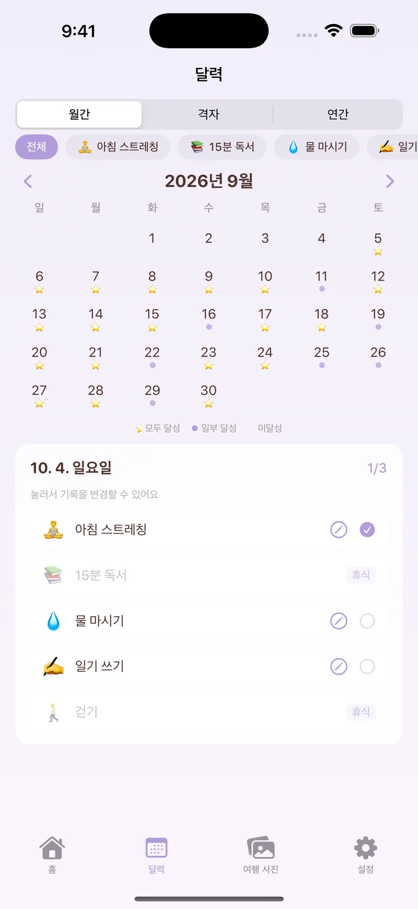

오늘 마루토는 왠지 운이 좋을 것 같아! 근거는 없어!
수다쟁이 친구와 더 즐거운 습관 만들기.
매일의 습관을,
모험으로 바꿔요.
오늘의 습관을 모두 완료하고 여행 사진 한 장을 받아요. 응원해 주는 마루토와 함께 250종의 여행 추억을 모아 보세요. 작은 성취가 내일의 즐거움이 돼요.
iPhone·iPad / 무료·광고 포함 / 가입 불필요
마루토를 소개해요
250종의 여행 사진


오늘 마루토는 왠지 운이 좋을 것 같아! 근거는 없어!
250종의 여행 사진을 모아요
✓한 번 밀어서 달성 기록
FREE무료, 가입 없이 시작
MEET YOUR CHATTY LITTLE COMPANION
수다쟁이 친구가,
매일의 즐거움으로.
칭찬하고, 응원하고, 가끔은 엉뚱한 이야기로 웃게 해 줘요. 습관 요정 마루토는 작은 한 걸음마다 함께하는 친구예요. 오늘은 무슨 이야기를 해 줄까요?
와! 독서 했구나! 마루토는 감동이야!
쉬는 건 나쁜 일이 아니야. 마루토가 보증할게!
후지산 꼭대기에 구름이 얹혀 있어서 나도 모자가 갖고 싶어졌어

궁금한 순간을 눌러 마루토의 이야기를 만나 보세요.
앱에 나오는 메시지의 예시예요.
만날 때마다 작은 인사.
시간대와 계절에 어울리는 인사와 일상 속 엉뚱한 생각이 미소를 지어 줘요.
작은 성취도 함께 기뻐해요.
작은 노력에도 마루토의 칭찬이 기다려요. 다음 한 걸음이 조금 더 기대돼요.
쉬는 날에도 내 편이에요.
뜻대로 되지 않은 날에는 다정한 응원을. 나만의 속도로 다시 시작해요.
01 — LITTLE BY LITTLE
작은 한 걸음,
미소 짓는 하루.
스트레칭, 책 한 페이지, 물 한 잔. 작은 것부터 시작해요. 마루토가 매일의 한 걸음을 응원해요.
01

A SMALL STEP FORWARD
해냈다!
한 번 밀어서 기록해요.
습관 카드를 밀어 달성으로 표시하세요. 달성을 취소하거나 달력에서 지난 기록을 수정할 수도 있어요.
탭해서 작은 성취를 경험해 보세요
웹사이트 체험
열심히 한 날에도, 뜻대로 되지 않은 날에도 마루토가 응원해요.
EVERY LITTLE DAY COUNTS
꾸준히 이어 온 날들이
자신감이 되어요.
월간 달력, 습관별 격자, 연간 기록으로 매일 쌓아 온 노력을 돌아보세요. 습관마다 메모도 남길 수 있어요.
02

02 — A WORLD OF LITTLE REWARDS
매일의 습관에서,
새로운 세상으로.
250✦
종의 여행 사진


습관을 이어 가며 여행 추억을 모아요.
하루의 습관을 모두 달성하면 여행 사진 1장을 받아요. 250종의 사진과 마루토의 여행 일기, 흥미로운 상식을 즐겨 보세요. 보상형 동영상 광고를 보고 보너스 사진을 받을 수도 있어요.
사진과 여행 일기 공유
마음에 드는 사진을 크게 열고 공유 버튼을 누르면 사진과 일기를 공유할 수 있어요. 앱 링크와 #MaruttoTracker도 함께 전달돼요.
03 — AT YOUR OWN PACE
내 생활에 맞으니까, 꾸준히.
내 생활 리듬에 맞게
습관을 실천할 요일, 알림, 하루 구분 시간을 설정하세요. 홈 화면 위젯에서도 오늘의 달성 현황을 확인할 수 있어요.
방패로 연속 기록 지키기
7일 연속 달성하면 방패를 받아요. 깜빡 잊은 날 연속 기록을 지켜 주는 기능은 설정에서 켜거나 끌 수 있어요.
18개 언어 및 지역 설정 지원
화면부터 마루토의 대사, 여행 일기까지 원하는 언어로 즐겨 보세요.
무료로 사용할 수 있나요?
무료로 다운로드하고 사용할 수 있어요. 앱에는 광고가 있으며, 선택적으로 동영상 광고를 보고 추가 여행 사진을 받을 수 있어요.
계정이 필요한가요?
가입할 필요가 없어요. 습관 기록은 기기에 저장돼요. iOS 17 이상을 사용하는 iPhone과 iPad에서 이용할 수 있어요.